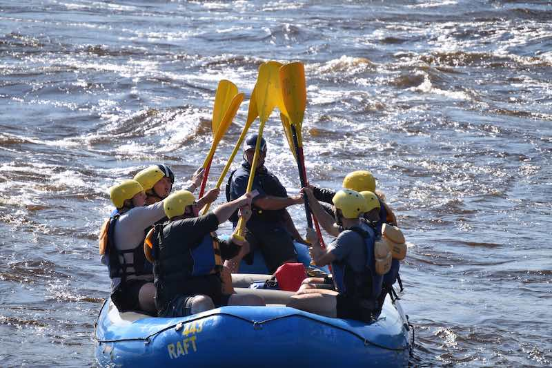
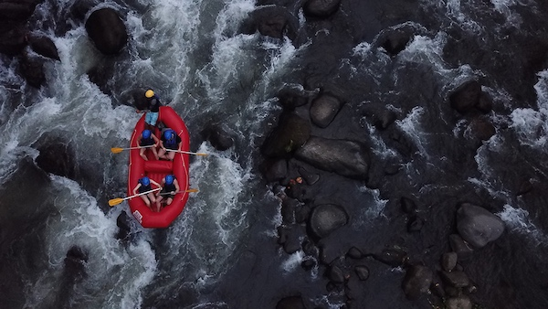
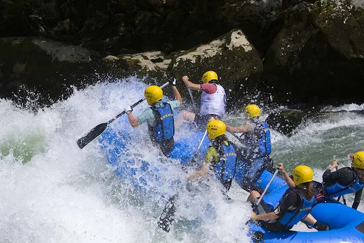
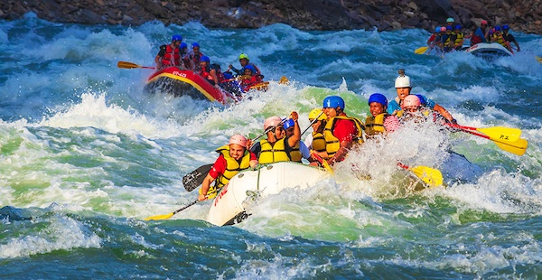
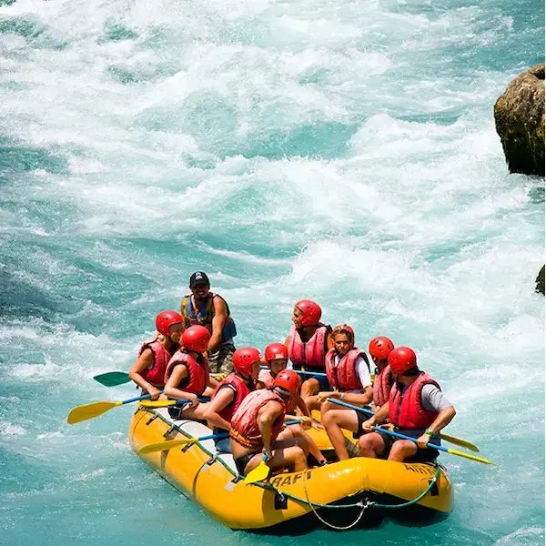

We want to year from YOU!
Questions, Concerns, Recommendations, Trip Bookings (or even Jokes)
Contact Us!Trips






| Trip Name | Trip Difficulty | Trip Details |
|---|---|---|
| Up the River | Low difficulty, but the trip is just as fun as our other two! Covers the Slingshot and Whitecaps rapids. If you are new to rafting or have a small group, this would be a great option! | Very scenic! Going through the canyon in the spring can't be beat! The easiest of our three trips, this 4.5 mile run sports two class 2 rapids. Generally, this trip takes up to 3 hours. If you are looking to get some more experience rafting, or start rafting, this is the trip for you. |
| Surfers Dream | Our medium Difficulty trip. Includes two class 3 rapids and several class 2 rapids. The notable class 3's include Inner City Strife and Surf City. If your paddling arms are just starting to come in, this is your trip! | Our most popular river run! Thousands of rafters have conquered Up the River, are you ready to conquer Surfers Dream? If you've gone rafting a few times, you are ready for the next level. This 6 mile trip will likely take 4 hours or more. Surfers dream is perfect for rafters to gain that next bit of experience to take on to The Gambit. |
| The Gambit | Our most difficult run. If you have experience with recreational rafting, we highly recommend this exhilarating trip. Covers the Knife's Edge and El Reino rapids. | Includes our two class 4 rapids and our longest trip, traveling 8 miles. Generally the trip takes anywhere from 4-5 hours. If you're a strong paddler and want to take on a challenge, this is mostly likely the trip for you. |